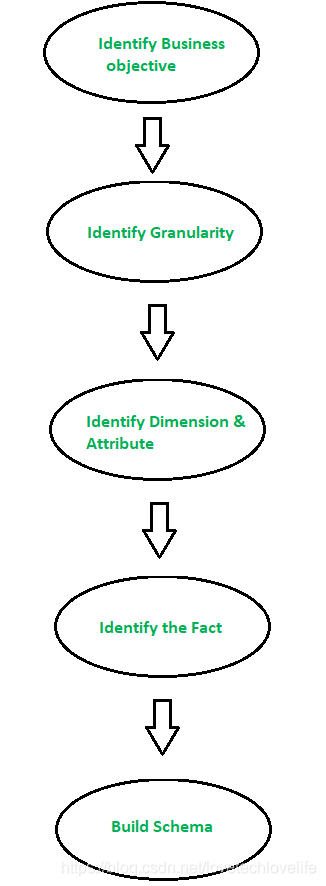

在GeeksforGeeks上看到了几篇关于数据仓库架构、维度数据建模的文章，进行翻译整理并加入了一些自己的理解，输出了这篇文章。
一、数据仓库架构
数据仓库是将不同来源的数据在统一的模式下组织起来的异构集合。构建数据仓库有两种方法：自顶向下和自底向上。
1. 自顶向下
自顶向下的架构如下图：
图中各主件的作用如下：
External Sources
外部源是不管收集的数据是何种类型的数据源。数据可以是结构化的、半结构化的和非结构化的。结构化的数据，比如：关系型数据库中的表等；半结构化的数据，比如：Json串、XML文件等；非结构化的数据，比如：图片、音频、视频等。Stage Area
由于从外部数据源抽取的数据没有特定的格式，因此需要对这些数据进行处理，以将其加载到数据仓库中。为此，建议使用ETL工具：E(Extracted): 从外部数据源抽取数据。
T(Transform): 将抽取的数据转换成标准格式。
L(Load): 将标准格式的数据加载进数据仓库。- Data-warehouse
在自顶向下的方法中，数据仓库存储最原始的数据。 - Data Marts
数据集市也是存储组件中的一部分。它存储由不同主题组织起来的数据。 - Data Mining
数据挖掘就是对数据仓库中的大量数据进行分析处理。利用数据挖掘算法找出数据仓库中隐藏的数据价值。
- Data-warehouse
自顶向下的方法是被数据仓库之父Bill Inmon定义的——数据仓库作为公司的中央仓库，而数据集市从完整的数据仓库创建而来。
自顶向下的优点
- 由于数据集市是从数据仓库创建而来，因此提供了数据集市的一致维度视图。
- 这种模型可以很好的应对业务数据的变化。大公司会更喜欢采用这种方法。
- 从数据仓库创建数据集市比较容易。
自顶向下的缺点
- 设计和维护的成本比较高。
2. 自底向上
自底向上架构如下图：
整个数据的流转过程：
- 首先，数据会从外部数据源被抽取过来。
- 数据经过ETL之后，不再进入数据仓库，而是被加载进数据集市。每个数据集市针对的是不同的业务主题，并且可以直接提供报表功能。
- 将数据集市整合进数据仓库。
自下而上的方法是Ralph Kimball(数据仓库和BI领域的权威专家)提出的——首先创建数据集市，并为分析提供单个业务视图，在创建完整的数据集市之后再创建数据仓库。
自底向上的优点
- 由于是先创建数据集市，所以会快速生成报表。
- 数据仓库可以根据数据集市进行扩展。
- 设计成本比较低。
自底向上的缺点
- 由于维度视图的局限性，造成这种方法没有对数据的一个全局把控。
二、维度数据建模
维度建模的概念是由Ralph Kimball提出的，是许多OLAP(Online Analytical Processing，联机分析处理)系统使用的数据模型。维度建模有两个比较常用的建模模型：星型模型和雪花模型，模型由事实表和维度表组成。
维度建模步骤如下图：

- Identifying the business objective
第一步就是确定业务对象，比如，销售(Sales)、人力资源(HR)、促销(Marketing)等。业务对象的选择直接影响着之后所用数据的质量，是数据建模中非常重要的一步。 - Identifying Granularity
确定要存储到表中的数据的粒度。- Indentify Dimensions and ites Attributes
维度用来对数据仓库中的事实数据进行分类。比如，数据维度可能会是时间中的年、月、日，也可能是地域中的省、市、区县等等。
- Indentify Dimensions and ites Attributes
- Indentifying the Fact
确认事实表，比如，商品价格、尺寸等。 - Building of Schema
构建模型，比较常用的模型有：星型模型和雪花模型。
三、星型模型和雪花模型
1. 星型模型
星型模型是数仓建模中较为常用的模型，它包含一个或多个事实表，以及连接到事实表上的维度表。星型模型相较于雪花模型在查询处理方面是更为高效的。
星型模型之所以被称为星型，是因为它的物理模型就像是一个恒星的形状，中心是一个事实表，事实表上连着维度表。如下图：
在上图中，SALES就是一个事实表，其他的都是维度表，并各自都有属于自己的属性。事实表中存储业务流程中的定量数据；维度表中存储事实数据的描述性特征。事实数据，比如图中的：销售价格、数量、重量等。
星型模型的优点：
- 关联查询比较简单，没有过于复杂的关联关系。
- 由于一些维度表已经预先进行了合并，因此不需要过多的join操作，那么关联查询效率就会更高。
星型模型的缺点：
- 数据并不像3NF那样规范化。
- 由于一些维度表已经预先进行了合并，就会造成数据的冗余存储，占用了更多的空间。
2. 雪花模型
雪花模型可以认为是星型模型的变体。雪花模型在星型模型的基础上，对维度表进行了更规范化的拆分，就会促使某些维度表拆分出更细分的维度表。看下图：
图中就把Employee表拆分成了Employee和Department两张维度表，Department维度表可以提供一个部门更详细的信息，比如名字和位置。还有也把Customer维度表拆分成了Customer和City两张维度表，City维度表有关于一个城市的详细信息，比如城市名、邮政编码、所属省和国家。
雪花模型和星型模型的主要区别在于，雪花模型的维度表是规范化存储的，减少了冗余。这样做的好处是易于维护和节省存储空间，缺点就是需要更多的连接来执行查询，性能较差。
通常情况下，不建议使用雪花模型，因为它会增加维度模型的复杂度，可理解性差，而且需要连接更多的表来满足查询，性能低。
最后总结一下雪花模型有哪些优缺点。
雪花模型的优点
- 提供了规范化的数据，数据完整性高。
- 由于数据时高度规范化的，因此占用的存储空间较小。
雪花模型的缺点
- 高度结构化的数据，在另一方面也增加了模型的复杂度。
- 规范化的数据，在查询的时候会有更多的join连接，就会导致较差的性能。